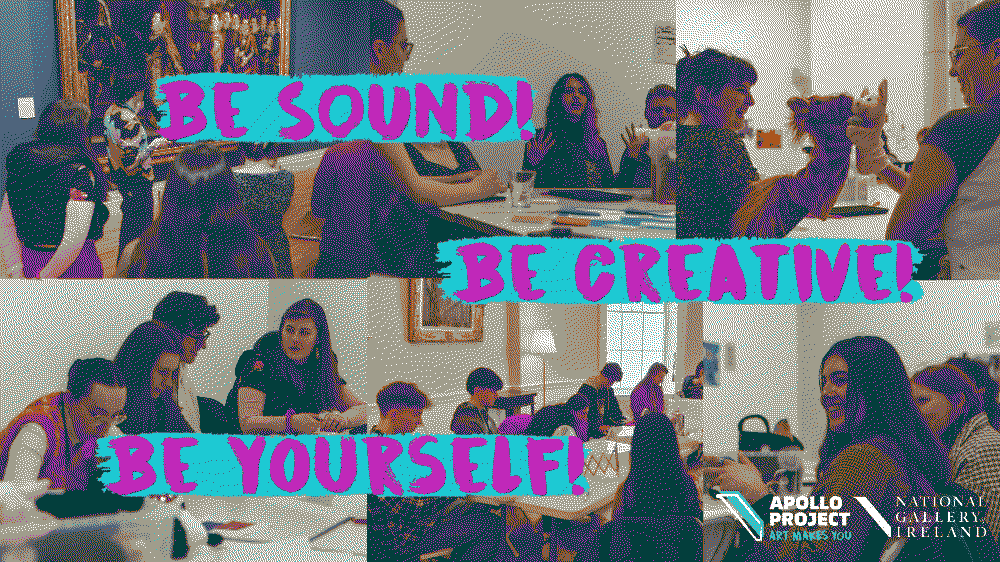

radical care

MANIFESTO FOR FUTURE OF PARTICIPATORY ART

A Manifesto for Gathering Garden
The ground must be levelled before anything can grow
Plant seeds conscientiously, think about what is possible with the conditions you have
Always exchange; never take from the soil, without offering back
Toil alongside, show your fragilities and ask for help
Be patient, go slow, take your time U+2013 replant, reshape and try again
Show radical tolerance U+2013 somethings will always grow wild
Question your green fingers U+2013 whose prints are being left on the land?
Take time to be proud and loud about the fruits of your labour and the nurturing value of the work you do
Leave space for your own struggles, watering and growth
Lucy Jefferies